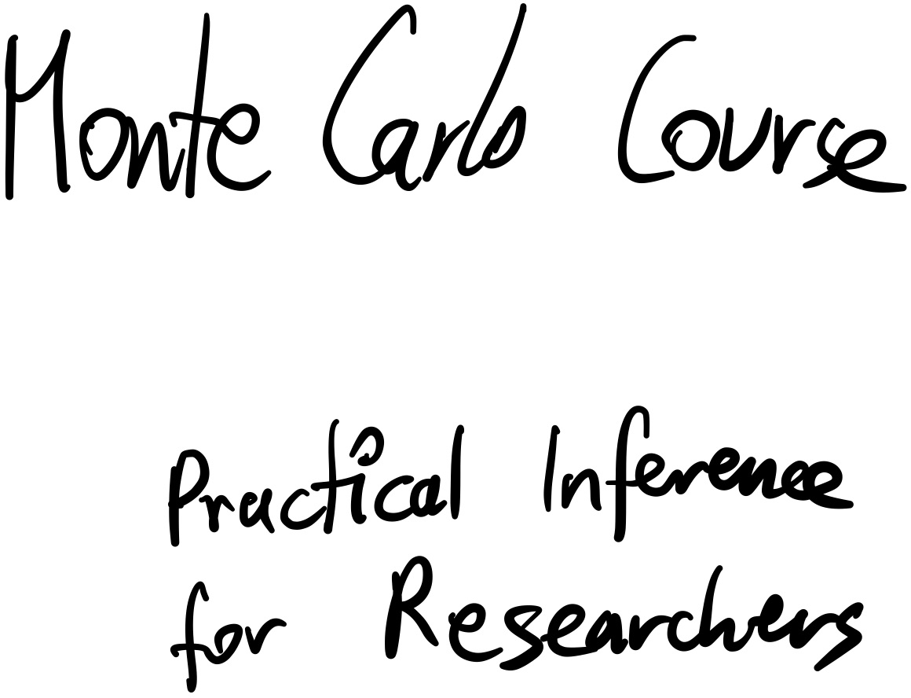

Install packages needed later in the course¶
First, lets make sure the necessary packages are installed:
[ ]:
import ultranest, snowline, cmdstanpy
print(len(dir(ultranest)) + len(dir(snowline)) + len(dir(cmdstanpy)));
The answer above is the first response to put in the questionnaire!
Basic probability distributions¶
[ ]:
import numpy as np
import matplotlib.pyplot as plt
import scipy.stats
Useful references:
You can create probability distribution objects with
scipy.stats.uniform(minimum, width)
scipy.stats.norm(mean, std)
etc.
Narrow uniform distribution¶
Plot a distribution that has uniform probability from 1.1 to 1.6, and zero probability elsewhere.
[ ]:
x = np.linspace(1.0, 2.0, 400)
rv_uniform = scipy.stats.uniform(1.1, 0.5)
plt.plot(x, rv_uniform.pdf(x))
What is the probability density at x=1.2?
[ ]:
rv_uniform.pdf(1.2)
What is the integral over the probability density?
\(\int_{-\infty}^{\infty} P(x)dx=?\)
[1]:
# TODO by you! (use rv_uniform)
Gaussian distribution¶
Create a normal distribution object (scipy.stats.norm) centered at 1.5 with standard deviation 0.02. Call it rv.
[ ]:
# TODO by you!
rv =
Plot its probability density distribution (PDF):
[ ]:
# TODO by you!
Plot its cumulative probability distribution (CDF):
[ ]:
# TODO by you!
How much probability is below 1.48? (use rv.cdf)
[ ]:
# TODO by you!
Does this value make sense, looking at the CDF and PDF plots?
How much probability is above 1.52? (use rv.cdf)
[ ]:
# TODO by you!
Combine the above to find out how much probability is between 1.44 and 1.56?
[ ]:
# TODO by you!
Does this match what you expect from “3 sigma”?
Generating random numbers¶
Useful references:
numpy.random: https://docs.scipy.org/doc/numpy-1.14.0/reference/routines.random.html
numpy User guide: https://numpy.org/doc/stable/user/
matplotlib for plotting: https://matplotlib.org/
Create a grid from 1 to 1.5 with 101 points:
[ ]:
xgrid = np.linspace(1, 1.5, 101)
[ ]:
xgrid
Set the random number generator seed to 42
[ ]:
np.random.seed(42)
For each value, generate a random number, Gaussian distributed centered at that value. Use standard deviation of 0.1 for the noise introduced.
[ ]:
measured = # TODO by you!
Plot one against the other as a scatter plot. Assign each point a error bar of 0.1.
[ ]:
plt.errorbar(x=xgrid, y=measured, yerr=0.1, marker='o', ls=' ')
plt.plot(xgrid, xgrid)
plt.xlabel('x values')
plt.ylabel('Measured values');
Plot a histogram of the measured values.
[ ]:
plt.hist( ???????? )
plt.xlabel('Measured values');
Compute summary statistics of this distribution: mean, median, standard deviation, 1% and 99% quantile.
[ ]:
np.quantile(measured, 0.99)
What is the 99% quantile (99th percentile) of this distribution?
Random Walk¶
Start at x=0,y=0 with seed=1.
Repeat the following 10000 times: generate a random gaussian number, add it to x. generate a random gaussian number, add it to y.
Plot x vs y (the sequence of 10000 points in a 2d line plot).
[ ]:
x = 0
y = 0
xseq = []
yseq = []
np.random.seed(1)
for .... : # TODO by you!
x += np.random.normal()
y += np.random.normal()
# TODO by you: keep track of the x and y
# append to xseq and yseq
# visualise:
plt.plot(xseq, yseq)
Plot histograms of x and y.
[ ]:
# TODO by you!
The random numbers added are normal distributed with mean 0 and standard deviation 1.
Is the resulting distribution the same, narrower or wider than this?